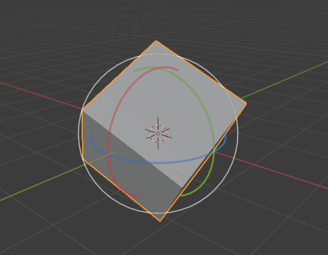
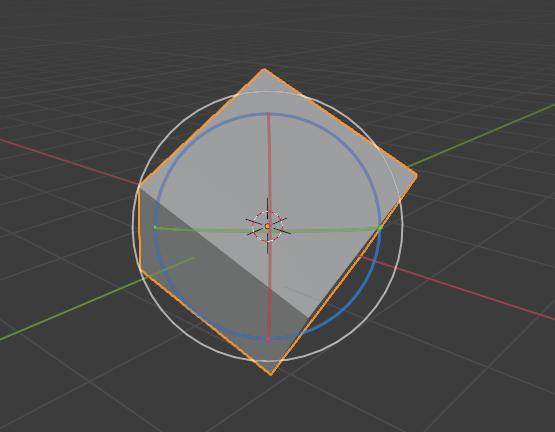

Transform Orientations¶
参考
- 模式
物体模式和编辑模式
- 面板
- 快捷键
Comma
Transform Orientations affect the behavior of Transformations. You will see an effect on the Object Gizmo (the widget in the center of the selection), as well as on transformation constraints, Axis Locking.
For example, when you press X, during the execution of the operation, it will constrain the transformation to the Global X axis. But if you press X a second time it will constrain to your Transform Orientation's X axis.

Transform Orientations selector.¶
The Orientations options can be set through the Transform Orientation selector in a 3D Viewport header.
In addition to the five preset options, you can define your own custom orientation (see Custom Orientations below).
坐标系¶
- 全局的
Align the transformation axes to world space.
The Navigation Gizmo in the top right corner of the viewport, and the Grid Floor, shows the axes of world coordinate system.
- 本地
Align the transformation axes to the selected objects' space.
When an object is rotated, the direction of the Local gizmo matches to the object's rotation relative to the global axes. While the Global gizmo always correspond to world coordinates.
- 法线
Align the transformation axes so that the Z axis of the gizmo will match the average Normal of the selected element. If multiple elements are selected, it will orient towards the average of those normals.
In Object Mode, this is equivalent to Local orientation.
- 万向节
Align each axis to the Euler rotation axis as used for input. Uses a Gimbal behavior that can be changed depending on the current Rotation Mode.
- 视图
Align the transformation axes to the window of the 3D Viewport:
Y: 上/下
X: 左/右
Z: 屏幕前/后
- 光标
Align the transformation axes to the 3D cursor.
示例¶

选择了全局变换坐标系的默认立方体。¶ |

全局坐标系旋转的立方体，gizmo没有改变。¶ |

Local orientation, gizmo matches to the object's rotation.¶ |

法向坐标系，编辑模式下。¶ |

万向变换坐标系。¶ |

视图变换坐标系。¶ |
自定义坐标系¶
参考
- 模式
物体模式和编辑模式
- 面板
You can define custom transform orientations, using object or mesh elements. Custom transform orientations defined from objects use the Local orientation of the object whereas those defined from selected mesh elements (vertices, edges, faces) use the Normal orientation of the selection.
Transform Orientations panel.¶
The Transform Orientations panel, found in the header of the 3D Viewport, can be used to manage transform orientations: selecting the active orientation, adding ("+" icon), deleting ("X" icon) and rename custom orientations.
The default name for these orientations is derived from what you have selected. If it's an edge, it will be titled, "Edge", if it's an object, it will take that object's name, etc.
创建坐标系¶
To create a custom orientation, select the object or mesh element(s) and click the "+" button on the Transform Orientations panel.

Just after creating the orientation, the Create Orientation 调整上一步操作 panel gives a few options:
- 名称
用于命名新坐标系的文本字段。
- 使用视图
新坐标系将与视图空间对齐。
- 创建后使用
If checked it leaves the newly created orientation active.
- 覆盖上一个
If the new orientation is given an existing name, a suffix will be added to it to avoid overwriting the old one, unless Overwrite Previous is checked, in which case it will be overwritten.